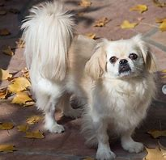

Necesita un ejercicio limitado y un mínimo de comida para mantener su salud, el Pekinés es una raza fácil de cuidar . Sin embargo, prospera con atención y disfruta siendo un perrito faldero.
Pekinés de un vistazo
The Pekingese Dog Breed
El Pekinés pareciera estar consciente de que es un perro de realeza ancestral y tiene un distanciamiento y dignidad que puede ser vista.
Talla:
Rango de peso:
Macho: 7 - 12 lbs.
Hembra: 7 - 12 lbs.
Altura a la cruz:
Macho: 8 pulgadas
Hembra: 7 pulgadas
Características:
Braquiocefálico (cara aplastada), piernas cortas y curveadas, orejas caídas (naturalmente)
Expectativas:
Ejercicio requerido: <20 minutos por día.
Nivel de energía: tranquilo
Promedio de vida: 13 a 15 años
Tendencia a babear: Baja Tendencia a roncar: Alta
Tendencia a ladrar: Moderado
Tendencia a excavar: Baja Necesidades sociales/de atención: Baja
Criado para:
Perrito faldero
El Pekinés es un miembro del grupo del miniatura, en un rango de altura de 6 a 9 pulgadas y un peso de 6 el más delgado a 14 libras el más pesado. (3 a 6 kilogramos)
El Pekinés tiene un cuerpo largo, piernas bajas con las extremidades encorvadas. Su cuerpo es robusto a pesar de su tamaño pequeño, y su complexión contribuye a su balance.
El Pekinés es reconocido por su hocico corte, ojos prominentemente largos y una forma de nariz en "V" arrugada entre el hocico y los ojos. Las orejas cuelgan por toda la cabeza, y la cola es llevada majestuosamente sobre su dorso.
La gloria de coronación del Pekinés es su manto profuso. El pelo cuelga largo y liso, idealmente con una textura dura y un capa interna abundante. Tiene una gran franja de pelo en sus orejas, cola y extremidades. Todos los colores son aceptables; una macara negra, un contorno negro en los ojos y orejas negras son deseables
El Pekinés pareciera estar consciente de que es un perro de realeza ancestral. Se le puede ver distante y digno, a pesar de que ocasionalmente se sueltan el pelo. Es un perro pequeño guardián muy alerta y sonara su alarma de ladrido más grande que su tamaño.
Generalmente el Pekinés es bueno con otros perros y mascotas, pero deben socializar desde una edad temprana y profundamente para aceptar a mucha gente. Pueden ser distantes con extraños, a pesar de ser devotos a sus familias. Aunque son inteligentes, estos pequeños perros independientes requieren entrenamiento con paciencia y creatividad.
El Pekinés no es propenso a ser un masticador molesto o cavador pero pueden ser tercos al aprender nuevas cosas.El Pekinés es otra raza china ancestral. Estos perros son conocidos en China desde el año 700 d. C. y por lo menos algo de su popularidad es atribuida al crecimiento del budismo en China. Los leones y por lo tanto los perros como leones eran el símbolo de Buda, y estos pequeños perros con su lujosas melenas encajaban en la realeza. La cruza con el Shih Tsu y el Lhasa Apso es ciertamente posible.
En los años 1800, el Pekinés era el querido de la corte imperial China. Numerosos eunucos dirigieron un programa de cría especial para estos "perros de manga" y el Pekinés fuer verdaderamente un perro de lujo. En el despido de Pekín por los ingleses en 1860, solo alguno Pekineses sobrevivieron, por lo menos uno de los que llego a Inglaterra y se convirtió en el querido de la Reina Victoria. Una vez más, el favor real dio popularidad y desde entonces así ha sido.
Actualmente los Pekineses son más largos que los verdaderos "perros de manga", pero siguen siendo queridos como perros de compañía y de alerta.
El pekinés es un perro muy fácil de mantener y requiere pequeñas cantidades de comida para mantenerse saludable. Con muchos premios se le llevara a ser obeso. Como es muy activo no necesita grandes caminatas para su ejercicio. Ya sea en interiores o exteriores en un buen clima será suficiente. Con la cara achatada no soportan bien la humedad o el clima cálido. Su hocico chato los hace propensos a roncar.
El Pekinés necesita mucha compañía humana para estar feliz. Les gusta la atención y ladraran para intentar proteger sus hogares y familias. Son muy felices siendo perritos falderos la mayoría del tiempo. La mayoría de los pekineses se llevan bien con los niños más grandes. Una socialización a temprana edad es importante.
El acicalamiento es una importante consideración. Un perro con un pelaje abundante requiere una atención diaria. La mayoría de los Pekinés tienen ligeramente un pelo más corto, fácil de cuidar, pero de todos modos necesitan un cepillado diario. El cuidado debe de llevarse a cabo para mantener sus caras limpias, especialmente alrededor de la parte arrugada del hocico. Cuidar también el pelo largo alrededor del recto para que se mantenga limpio también.

China- Cuna del Pekinés, tratado como tesoro nacional
El Pekenés se originó en China hace más de 2000 años
Era exclusivo de la familia imperial china, y se consideraba un símbolo sagrado
Se crían en criaderos a tratamientos de acupuntara, medicina tradicional china y masajes especiales
Aún hoy, muchos lo consideran un símbolo de buena fortuna y nobleza
Se crian en criaderos con certificados de linaje imperial
Hay dueños que les hacen altares en casa como homenaje a su estatus sagrado
Corea del Sur- Lujo moderno y alta tecnologia para perros VIP
Los Pekenés son populares por su tamaño y su caracter, ideales para la vida urbana en Seúl
Son conciderados "compañeros de estilo de vida", no solo mascotas
Tienen acceso a clinicas de cirujia estatica veterinaria, aunque muy polemicas
En redes sociales, muchos pekeneses coreanos tienen mas segidores que celebridades
Les cocinan dietas personalizadas segun su tipo de piel, energia y genetica
Francia- Un Pekinés en París es pura elegancia
En Francia, tener un pekenés puede ser visto como un simbolo de refinamiento y estilo clasico
Desde la epoca napoleonica se popularizaron como perros de saon
Algunos pekeneses duermen en camas ortopedicas con sabanas de lino
Son habituales en desfiles con ropa de diseñador
Algunos tienen acceso a spa semanal con baños de leche y masajes aromaticos